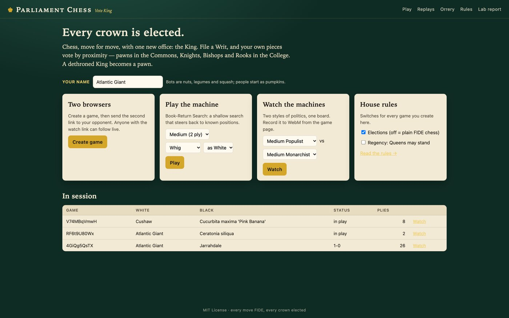
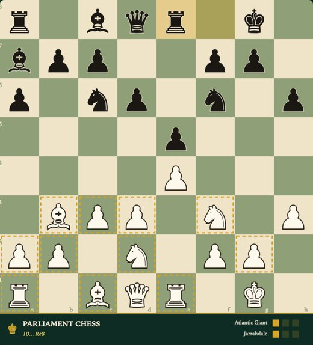
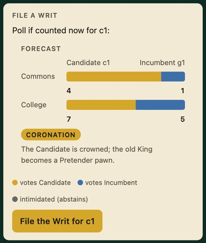
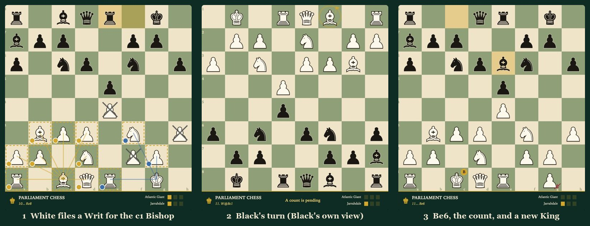
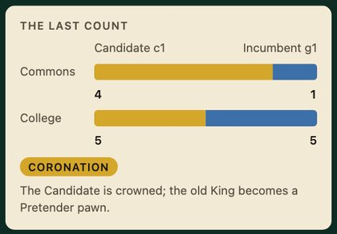
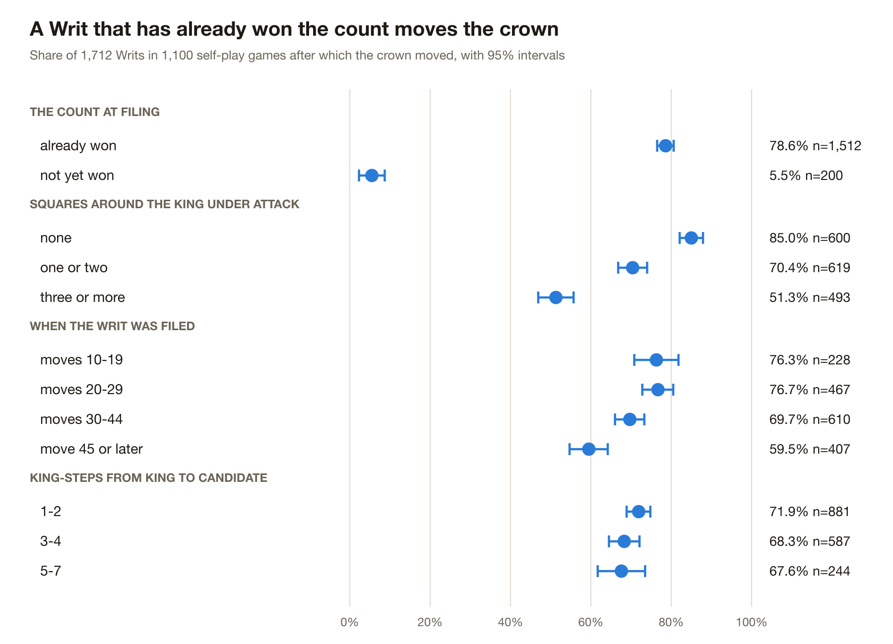
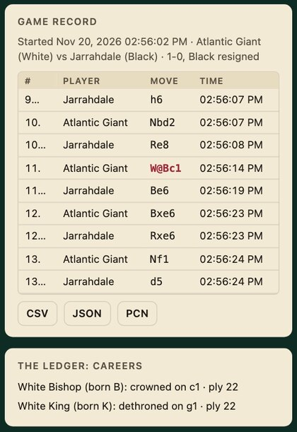
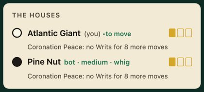

1 · Play it
The player’s guide
Every move is a normal chess move. The one new thing is the crown: from move 10 you may call an election, and your own pieces vote on whether the crown leaves your King for another piece.
Play in a minute
git clone https://github.com/vonglurt/parliamentchess.git
cd parliamentchess
make up # then open http://localhost:8080 and press Play now
make down # stop itYou need PHP 8.2 or later and nothing else (no Composer, no database; pdo_sqlite adds the opening book if your PHP has it). The game is a server, so it runs on your machine rather than on these pages. Open it in Chrome.
Your first game, on video
The lobby

You arrive as a pumpkin or another giant squash (Atlantic Giant, Big Max, Jarrahdale…); type a new name if you like. Then pick a way to play:
| Card | What it does |
|---|---|
| Two browsers | Create a game and send the second link to a friend. Anyone with the watch link can follow live. |
| Play the machine | Easy, Medium or Hard, as a Whig, a Populist or a Monarchist, with either colour. |
| Play the neural net | The champion of the training runs, with its mind drawn beside the board on every move. Or Watch it think, or Net against net. |
| The classics | Famous short games, move for move; the net reads every move and says what it would have played. |
| Watch the machines | Two bots argue it out while you watch. |
| House rules | Elections off (plain FIDE chess), or Regency (Queens may stand). |
How a game goes
1. It’s chess
Castling, en passant, promotion, all of it. Fool’s Mate still mates. For the first nine moves nothing else can happen (the Coronation Peace), so your openings are safe.
2. From move 10, you may file a Writ
On your turn, instead of moving, press File a Writ and name a Candidate: one of your own pieces that could be King instead. It can’t be your King or a Queen, it can’t have worn the crown before, and it can’t be under attack. The gold squares show who may stand. Pick one, and the board previews the vote as it stands right now. Filing costs your whole turn.


3. The campaign: your opponent gets one move
They can attack the Candidate’s square, which makes the election fail. They can capture your voters, or attack them so they’re too scared to vote. Or they can ignore you and file a Writ of their own.
4. The count
At the start of your next turn, your pieces vote. Each one backs whichever is nearer, the Candidate or the King, counting king-steps; a tie backs the King. A piece under attack abstains.
- Commons: every pawn has 1 vote.
- College: a Knight has 2, a Bishop 2, a Rook 3.
- Speaker: the Queen votes only to break a tie in the College.

| Commons back the Candidate | Commons back the King | |
|---|---|---|
| College backs the Candidate | Coronation: the Candidate is King, the old King becomes a pawn | Contested Coronation: the same, and your opponent gets a bonus Writ |
| College backs the King | Royal Swap: King and Candidate swap squares | Defeat: nothing happens |
A result that would leave your new King in check, or give check, doesn’t count. When the crown moves, you lose your castling rights. Then you play your move as usual.
A king vote, step by step

- Move 11. White’s King sits on g1, so White files a Writ for the Bishop on c1. The preview looks comfortable: Commons 4 to 1, College 7 to 5.
- Black has one move, and finds a clever one: Be6, attacking the Bishop on b3.
- The count. The b3 Bishop is under attack, so it abstains. That leaves the College tied at 5 to 5; the Queen on d1 is nearer c1 than g1, so as Speaker she breaks the tie for the Candidate. With the Commons already 4 to 1, it’s a Coronation: the Bishop on c1 is the new King, the old King on g1 a Pretender pawn. Castling queenside, done by election.

Writs, terms and the Ledger
- Writs: you start with 1. Each time you lose a Knight, Bishop, Rook or Queen you gain 1 (a grievance), up to 3. A Contested Coronation hands your opponent one too.
- Terms: after a count you wait 5 full moves before your next Writ. No Writ while in check, and one election at a time.
- One term only: a piece that has worn the crown can never be elected again. The starting Kings already have.
- Pretenders: a dethroned King becomes a pawn, and it may only ever promote to a Rook, Bishop or Knight.
- Stranded pawns: a pawn put on its last rank by an election can’t move, but it still votes. A pawn on its own first rank steps one square, never two.
Winning is plain chess: checkmate whoever wears the crown. A mate delivered during your opponent’s campaign only counts after their count, because the count may carry the crown out of the net. The full text is in RULES.md.
When to move the crown
Like castling, the crown move has a right moment. In 1,712 Writs from 1,100 self-play games:
- Count first. File a Writ only when the preview already wins it: those moved the crown 79% of the time, the rest 5.5%.
- Crown before the storm. With no square around your King attacked, 85% succeeded; with three or more attacked, 51%.
- Crown early. Moves 10 to 29: 76%. Move 45 or later: 60%.
- Guard your voters. Like Be6 above, the reply that wins is usually an attack on a voter, not on the Candidate.

Playing the neural net
The lobby’s Play the neural net card puts you against the champion of the training runs (generation 15 at the time of writing). Every time it moves, its mind is drawn beside the board: what it saw, the two layers that computed, the value, and the moves it liked. The net’s own page explains how to read it and how it was trained.
To beat it: it sees two moves ahead (plus one more for every check), so quiet three-move plans and a well-timed Writ are your weapons. When their worst hang lights up in its inputs, it has spotted your loose piece.
The classics
Pick a famous short game (Fool’s Mate, Scholar’s Mate, Légal 1750, Réti–Tartakower 1910, the Opera Game 1858, Lasker–Thomas 1912) and press Watch the net read it. Every move is history’s; the net reads each one through its own weights, ranks it, and says what it would have played. Hover the panel to hold the game while you read.
Your game, on the record


The side panel lists every move with its player and the time it was played, and CSV, JSON and PCN download the whole record. The Ledger keeps each piece’s career: born a Bishop, crowned on c1. Bots are named after sixty nuts, legumes and squash: you might lose to Ceratonia siliqua (the carob) or a Black-eyed Pea.
PCN is PGN with two additions: a Writ is a move, W@Nf5 (W@e4 for a pawn), and each count is a comment: {Black count for d7: Commons 3-0, College 7-0 => coronation}.